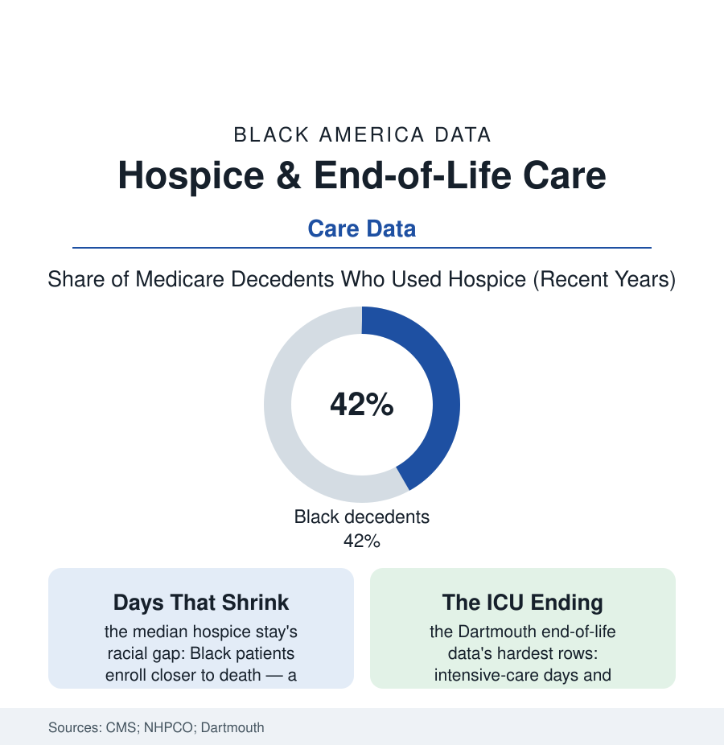

Black Public Health
The Last Care: Hospice, Dying, and the Black Family's Terms
Black Medicare patients use hospice less, enroll later, and die in intensive care more — a gap the research ties to access, information, and a well-earned insistence on fighting. The end-of-life file.

How a life ends is the last entry in this section's ledger, and it carries a gap that resists the usual explanations: Black patients covered by Medicare use hospice — the benefit built to make dying comfortable, at home, among family — at lower rates than white patients, enroll days rather than months before death when they do, and spend more of their final months in intensive care in the Dartmouth Atlas's end-of-life data. This article reads the last file.
The Shape of the Difference
The Medicare hospice data draw the pattern precisely: hospice use among Black decedents running several points below white decedents in the recent years' counts, the median length of stay shorter, the revocation and live-discharge rates higher (the patient who signs off hospice to return to the hospital — the data's marker of the benefit's uneasy fit), and the site-of-death rows inverted from the population's stated wishes (the survey literature consistently finding Black respondents preferring home death at rates like everyone else's — the hospital deaths a systems outcome, not a preference). The treatment-intensity rows complete the portrait: the feeding tubes, ventilators, and ICU admissions of the last months concentrated in the same populations across the Dartmouth regions — the 'more care' that the outcomes research increasingly reads as worse dying: more suffering, more family debt of the financial kind and the other kind, no survival to show for it in the terminal diagnoses where the intensity concentrates. The advance-directive file stands behind everything (the completion rates for directives and healthcare proxies running lower in the survey data — the paperwork of preference missing precisely where the system's defaults are most aggressive, the Terri Schiavo-era forms never having been designed, in the community's documented account, with its history in mind).
The workforce and payment rows sketch the system's own slow turn: palliative medicine's fellowship ranks remain among the least diverse in the specialty census (the conversation about stopping being led, disproportionately, by physicians who share neither the patient's background nor his church), while Medicare's advance-care-planning billing codes — paying physicians, since the mid-2010s, for the goals-of-care conversation itself — show uptake climbing in the claims data from a low base, their use rates themselves sorted by the same geography as everything else in this file. The hospice benefit's own design carries a structural clause the policy literature keeps flagging: electing hospice has historically meant surrendering Medicare coverage for curative treatment of the terminal diagnosis — a forced either/or that lands, in the family conference, exactly as it sounds, and whose softening in the recent demonstration models (concurrent care pilots letting patients keep treatment alongside hospice support) produced the predictable result in the evaluators' data: earlier enrollment, calmer endings, no one's hope confiscated at the door.
Why the Gap Is Not a Mystery
The research literature, to its credit, refuses the lazy reading, and the file's causes are entered with unusual candor: the information asymmetry (hospice referred later and explained worse in the communication studies' recordings — the oncologist's conversation timed and coded, the option presented as 'giving up' by framing or by omission), the access geography (hospice's workforce and agency map thinner in the neighborhoods of the home-health file, the benefit requiring a home and a caregiver that the housing and family files show are not evenly distributed), the faith dimension recorded respectfully in the qualitative data (the church tradition's theology of the miraculous and the fighter — prolonging hope as devotion, the pastor's counsel weighed against the palliative team's, the family meeting as a negotiation between two kinds of love), and beneath it all the trust ledger this whole section keeps (a population asked to accept less intervention at the end from the same system whose under-treatment fills the preceding hundred articles — the hospice conversation arriving, in the family's hearing, as one more rationing dressed in kindness; the researchers who take this seriously, rather than pathologizing it, produce the interventions that work: the Black-led hospice outreach of the senior-care file's founders, the church-based advance-care programs, the palliative teams that lead with what they will do rather than what they will stop). The data's verdict on those efforts is the file's hope: where the offer is made early, plainly, and by messengers the community trusts, the enrollment curves converge — the preference, given a fair hearing, was never the problem.
Reading the Last Data
Every article in this section is, in the end, about time — years of life, months of illness, days of care. The hospice file counts the final unit: the last days, and whether they were spent as the person spending them would have chosen. The Medicare tables publish the rates without comment. The families could annotate every decimal.
More in Black Public Health
Hypertension Among Black Adults: Prevalence, Control, and Consequences
About 55 percent of Black adults have hypertension — the highest rate of any U.S. group. Prevalence, onset, control, and the stroke, heart, and kidney consequences in the data.
Diabetes Among Black Adults: Prevalence and Complications
Nearly one in five Black adults has diabetes, diagnosed or undiagnosed — and its complications fall with particular weight. The CDC data on prevalence, control, and outcomes.
Black Life Expectancy: The Gap at Birth and Its Causes
Black life expectancy at birth is about 73 years, roughly five years below the national figure — the summary measure of every health gap in this section. The CDC data.
Source: Centers for Medicare & Medicaid Services hospice data; National Hospice and Palliative Care Organization; Journal of the American Geriatrics Society end-of-life studies; Dartmouth Atlas end-of-life care data.